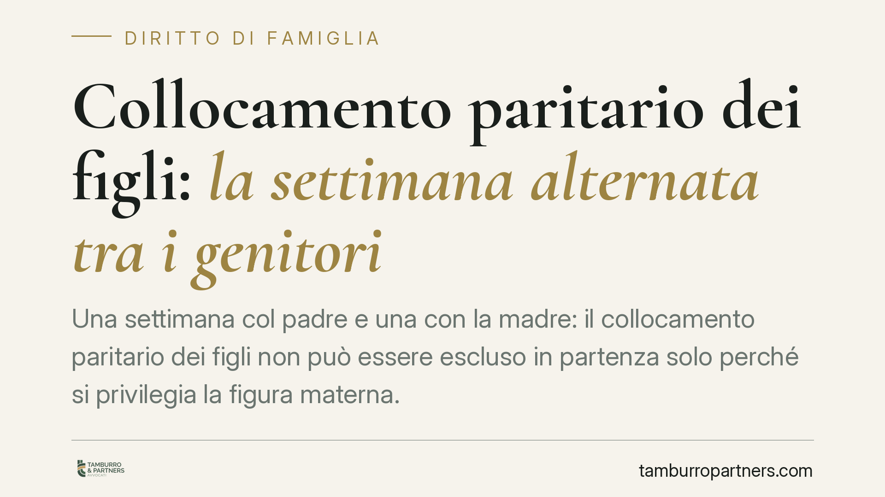

Collocamento paritario dei figli: la settimana alternata tra i genitori
Una settimana col padre e una con la madre: il collocamento paritario dei figli non può essere escluso in partenza solo perché si privilegia la figura materna. Lo afferma la Cassazione con l'ordinanza n. 6078/2026, che impone al giudice una valutazione concreta e caso per caso. Una pronuncia che incide su come si organizza la vita dei minori dopo la separazione.

Il principio affermato dalla Cassazione
La Corte di Cassazione, con l'ordinanza n. 6078/2026, torna sul tema del collocamento dei figli minori dopo la crisi della coppia. Il punto è netto: non esiste una preferenza automatica per la madre quando si tratta di decidere dove e con chi i figli debbano vivere in prevalenza.
Il collocamento paritario - cioè la permanenza alternata e tendenzialmente equivalente presso ciascun genitore, ad esempio una settimana con l'uno e una con l'altro - non può essere scartato a priori. Il giudice deve esaminare la situazione reale della famiglia, senza ricorrere a schemi precostituiti fondati sul genere del genitore.
Inquadramento normativo
Il riferimento è l'art. 337-ter del codice civile, che disciplina i provvedimenti riguardo ai figli in caso di separazione o cessazione della convivenza. La norma stabilisce che il minore ha diritto a mantenere un rapporto equilibrato e continuativo con entrambi i genitori: è il cosiddetto principio di bigenitorialità.
La legge distingue tra affidamento e collocamento. L'affidamento riguarda la titolarità delle decisioni sulla vita del minore e, di regola, è condiviso tra i genitori. Il collocamento, invece, attiene al luogo di residenza prevalente del figlio e all'organizzazione dei tempi di permanenza. La Cassazione precisa che quest'ultimo profilo va modellato sull'interesse concreto del minore, non su presunzioni generiche.
Cosa valuta il giudice
L'ordinanza individua una serie di elementi che il giudice deve ponderare prima di stabilire un assetto paritario o, al contrario, un collocamento prevalente presso uno dei due genitori. In sintesi:
- la disponibilità di tempo di ciascun genitore da dedicare al figlio;
- gli orari e il tipo di lavoro, che possono rendere più o meno sostenibile l'alternanza settimanale;
- la rete di supporto familiare (nonni, parenti) su cui ciascun genitore può contare;
- l'età del minore, poiché le esigenze di un bambino piccolo sono diverse da quelle di un adolescente.
Nessuno di questi fattori, preso singolarmente, è decisivo. Conta la valutazione d'insieme, orientata a garantire stabilità e continuità affettiva al figlio.
Implicazioni pratiche
Per i genitori che affrontano una separazione, la pronuncia ha un peso concreto. Il padre che chiede un collocamento paritario non parte più in posizione di svantaggio solo perché uomo: la sua richiesta va esaminata nel merito, sulla base di ciò che può effettivamente offrire al minore.
Specularmente, la madre non può contare su un automatismo a proprio favore. Anche la sua posizione sarà misurata sulle condizioni reali di vita e sull'interesse del figlio.
Il collocamento paritario, va detto, non è la soluzione ideale in ogni caso. Richiede genitori capaci di collaborare, abitazioni ragionevolmente vicine e un'organizzazione che non destabilizzi la routine scolastica e sociale del minore. Dove questi presupposti mancano, l'alternanza settimanale può rivelarsi controproducente. La valutazione resta affidata al giudice, caso per caso.
Cosa fare in concreto
- Documentate la vostra disponibilità reale: orari di lavoro, flessibilità, presenza nelle attività quotidiane del minore. Le affermazioni generiche hanno scarso peso.
- Valutate la fattibilità logistica del collocamento paritario: distanza tra le abitazioni, vicinanza alla scuola, continuità delle relazioni sociali del figlio.
- Mettete al centro l'interesse del minore, non la rivendicazione di una parità matematica dei tempi fine a sé stessa.
- Privilegiate, dove possibile, un accordo: un piano genitoriale condiviso è più solido e meno traumatico di un assetto imposto dal giudice.
- Rivolgetevi a un legale prima di depositare domande, per impostare le richieste sulla base degli elementi che la giurisprudenza ritiene davvero rilevanti.
Consigliamo di affrontare questi temi con un confronto preventivo, evitando di trasformare l'organizzazione dei tempi con i figli in un terreno di scontro che danneggia, prima di tutto, i minori.
---
*Contributo informativo a cura di Tamburro & Partners - Avv. Giuseppe Tamburro. Non costituisce parere legale.*
Ogni famiglia ha il suo equilibrio.
Separazione, divorzio, affidamento, assegno: se vuoi un confronto riservato su una specifica situazione, scrivi allo studio. Ti rispondiamo entro un giorno lavorativo.